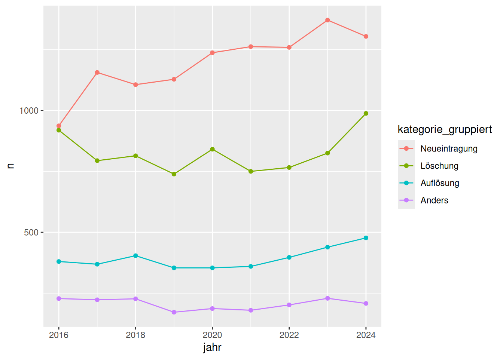
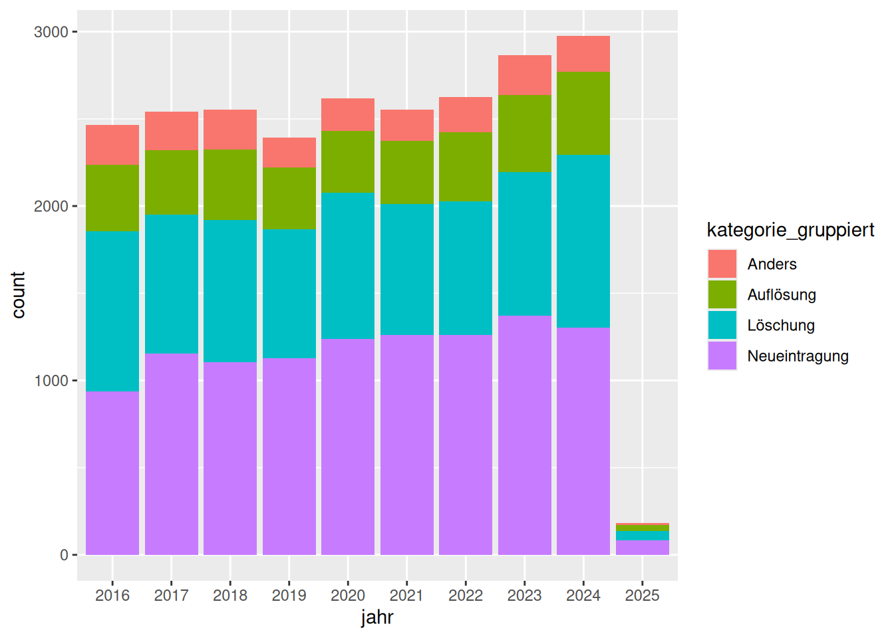

library(tidyverse)Prepare Companies Dataset
Tastaturkürzel
| Einen neuen Code-chunk hinzufügen | Ctrl + Alt + I |
| Code “Zeile für Zeile” innerhalb eines Code-chunks ausführen | Ctrl + Enter |
| Den gesamten Code-chunk ausführen | Ctrl + Shift + Enter |
| (Aus-)kommentieren | Ctrl + Shift + C |
Das Pipe |> |
Ctrl + Shift + M |
Der Zuweisungs-Operator <- |
Alt + - |
Packages laden
Daten Laden
We use company mutation data from the OGD-Portal BL: dfmutationen nach Rechtsform, NOGA-Einteilung und Gemeinde (seit Februar 2016)
df <- read_delim("data/ogd_12460-firmen.csv", delim = ";")
glimpse(df)Rows: 23,770
Columns: 16
$ kategorie <chr> "Fusion", "Fusion", "Neueintragung", "Neu…
$ publikationsdatum_shab <date> 2018-06-26, 2018-06-26, 2018-06-26, 2018…
$ journaldatum_handelsregister <date> 2018-06-21, 2018-06-21, 2018-06-21, 2018…
$ id_shab <dbl> 4314737, 4314735, 4314731, 4314729, 43114…
$ firmensitz_code <dbl> 2824, 2770, 2887, 2763, 2831, 2770, 2831,…
$ firmensitz <chr> "Frenkendorf", "Muttenz", "Lampenberg", "…
$ meldung <chr> "Elektro Naegelin AG, in Frenkendorf, CHE…
$ uid <chr> "CHE115713279", "CHE115756975", "CHE23510…
$ firmenname <chr> "Elektro Naegelin AG", "Autohaus Wederich…
$ rechtsform_code <chr> "0106", "0106", "0107", "0106", "0101", "…
$ rechtsform <chr> "Aktiengesellschaft (AG)", "Aktiengesells…
$ noga_code <chr> "432100", "452001", "711205", "282500", "…
$ noga <chr> "Elektroinstallation", "Instandhaltung un…
$ noga_abschnitt_code <chr> "F", "G", "M", "C", "M", "G", "M", "S", "…
$ noga_abschnitt <chr> "BAUGEWERBE/BAU", "HANDEL; INSTANDHALTUNG…
$ noga_abteilung <chr> "Vorbereitende Baustellenarbeiten, Bauins…summary(df) kategorie publikationsdatum_shab journaldatum_handelsregister
Length:23770 Min. :2016-02-03 Min. :2016-01-29
Class :character 1st Qu.:2018-05-17 1st Qu.:2018-05-14
Mode :character Median :2020-10-02 Median :2020-09-29
Mean :2020-09-05 Mean :2020-08-31
3rd Qu.:2023-01-12 3rd Qu.:2023-01-09
Max. :2025-01-29 Max. :2025-01-24
id_shab firmensitz_code firmensitz meldung
Min. :2.637e+06 Min. :2761 Length:23770 Length:23770
1st Qu.:4.235e+06 1st Qu.:2767 Class :character Class :character
Median :1.005e+09 Median :2773 Mode :character Mode :character
Mean :7.217e+08 Mean :2799
3rd Qu.:1.006e+09 3rd Qu.:2829
Max. :1.006e+09 Max. :2895
uid firmenname rechtsform_code rechtsform
Length:23770 Length:23770 Length:23770 Length:23770
Class :character Class :character Class :character Class :character
Mode :character Mode :character Mode :character Mode :character
noga_code noga noga_abschnitt_code noga_abschnitt
Length:23770 Length:23770 Length:23770 Length:23770
Class :character Class :character Class :character Class :character
Mode :character Mode :character Mode :character Mode :character
noga_abteilung
Length:23770
Class :character
Mode :character
df |> count(kategorie)# A tibble: 9 × 2
kategorie n
<chr> <int>
1 Auflösung 2243
2 Auflösung infolge Konkurs 1323
3 Fusion 476
4 Löschung 7041
5 Löschung infolge Fusion 450
6 Neueintragung 10843
7 Spaltung 21
8 Widerruf der Auflösung 1343
9 Wiedereintragung 30df |>
mutate(jahr = year(journaldatum_handelsregister)) |>
count(jahr, kategorie)# A tibble: 84 × 3
jahr kategorie n
<dbl> <chr> <int>
1 2016 Auflösung 244
2 2016 Auflösung infolge Konkurs 136
3 2016 Fusion 45
4 2016 Löschung 875
5 2016 Löschung infolge Fusion 44
6 2016 Neueintragung 937
7 2016 Spaltung 7
8 2016 Widerruf der Auflösung 171
9 2016 Wiedereintragung 5
10 2017 Auflösung 251
# ℹ 74 more rowsdf <- df |>
mutate(
jahr = year(journaldatum_handelsregister),
.after = journaldatum_handelsregister
) |>
mutate(
kategorie_gruppiert = fct_collapse(
kategorie,
"Auflösung" = c("Auflösung", "Auflösung infolge Konkurs"),
"Löschung" = c("Löschung", "Löschung infolge Fusion"),
"Neueintragung" = "Neueintragung",
other_level = "Anders"
), .after = kategorie
) |>
arrange(desc(publikationsdatum_shab)) |>
relocate(jahr) |>
select(-where(is.Date), -meldung, -id_shab)df |>
summarise(n = n(), .by = c(jahr, kategorie_gruppiert)) |>
filter(jahr != 2025) |>
mutate(kategorie_gruppiert = fct_reorder(kategorie_gruppiert, -n)) |>
ggplot(aes(x = jahr, y = n, colour = kategorie_gruppiert)) +
geom_point() +
geom_line()
{
df |>
summarise(n = n(), .by = c(jahr, kategorie_gruppiert)) |>
filter(jahr != 2025) |>
mutate(kategorie_gruppiert = fct_reorder(kategorie_gruppiert, -n)) |>
ggplot(aes(x = jahr, y = n, fill = kategorie_gruppiert)) +
# geom_col(position = "jitter")
geom_col(position = "fill")
} |>
plotly::ggplotly(){
df |>
summarise(n = n(), .by = c(jahr, kategorie_gruppiert)) |>
filter(jahr != 2025) |>
mutate(kategorie_gruppiert = fct_reorder(kategorie_gruppiert, n)) |>
mutate(perc = n / sum(n), .by = jahr) |>
ggplot(aes(x = jahr, y = perc, fill = kategorie_gruppiert)) +
# geom_col(position = "jitter")
geom_col()
} |>
plotly::ggplotly()df |>
add_count(jahr, kategorie_gruppiert) |>
mutate(kategorie_gruppiert = fct_reorder(kategorie_gruppiert, n, mean)) |>
mutate(jahr = factor(jahr)) |>
ggplot(aes(x = jahr, fill = kategorie_gruppiert)) +
geom_bar()
df <- df |>
add_count(jahr, kategorie_gruppiert) |>
mutate(kategorie_gruppiert = fct_reorder(kategorie_gruppiert, -n, mean)) |>
mutate(across(c(jahr, kategorie, firmensitz_code, firmensitz), \(x) factor(x))) |>
select(-n)
df |> glimpse()Rows: 23,770
Columns: 14
$ jahr <fct> 2025, 2025, 2025, 2025, 2025, 2025, 2025, 2025, 20…
$ kategorie <fct> Widerruf der Auflösung, Neueintragung, Löschung, L…
$ kategorie_gruppiert <fct> Anders, Neueintragung, Löschung, Löschung, Löschun…
$ firmensitz_code <fct> 2831, 2831, 2770, 2770, 2775, 2763, 2828, 2831, 27…
$ firmensitz <fct> Pratteln, Pratteln, Muttenz, Muttenz, Therwil, Arl…
$ uid <chr> "CHE114900844", "CHE175812531", "CHE131395143", "C…
$ firmenname <chr> "Flipp GmbH in Liquidation", "Alaia Beauty GmbH", …
$ rechtsform_code <chr> "0107", "0107", "0101", "0101", "0101", "0107", "0…
$ rechtsform <chr> "Gesellschaft mit beschränkter Haftung (GmbH)", "G…
$ noga_code <chr> "181201", "960202", "432100", "692000", "329900", …
$ noga <chr> "Offsetdruck", "Kosmetiksalons", "Elektroinstallat…
$ noga_abschnitt_code <chr> "C", "S", "F", "M", "C", "G", "S", "L", "S", "U", …
$ noga_abschnitt <chr> "VERARBEITENDES GEWERBE/HERSTELLUNG VON WAREN", "E…
$ noga_abteilung <chr> "Herstellung von Druckerzeugnissen; Vervielfältigu…write_csv(x = df, file = "data/ogd_12460_firmen_clean.csv")